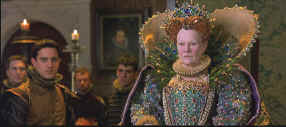

|
 |
|
Cited by
ISF for high transfer standards |
Here’s one way to make Shakespeare approachable to modern
audiences: turn out a light, energetic, romantic comedy lampooning
the creative process. Shakespeare in Love succeeds in
bringing the robust Elizabethan humor to life with Shakespeare,
arguably the world’s most famous writer, at the center of a group
of players gushing with period charm. The play’s the thing, and
it’s "Romeo and Ethyl, the Pirate’s Daughter."
With some help from a fellow writer and a little refinement, Ethyl
becomes Juliet pining for her lover on a balcony. And while
Shakespeare composes the lyrical world of for his play, he chases
after the woman who turns out to be his lead actor. The
delicious historical romp comes to life in romantic comedy that
brings to life the world’s most famous writer is a romantic comedy
full of Elizabethan charm.
 |
|
The Queen's party
dress.©Miramax |
The play may be the thing, but it takes actors to bring it to life
and Shakespeare in Love boasts many fine performances and, one
misstep that the production miraculously survives. Joseph Fiennes
plays William Shakespeare as a callow and frenetic fellow more
interesting in the bed than being the bard. Fiennes tries too hard
methinks. His energy seems consistently misplaced, he’s the most
modern man in the production, and it’s hard to believe that he is
able to charm players, ladies and entrepreneurs alike. Gwyneth
Paltrow’s Oscar© winning performance
as Viola De Lesseps stands up boldly to numerous revisits. Paltrow
has the grace and breeding to pull off the comedy and romance with
delight. Geoffrey Rush is absolutely great as owner of The Rose,
producer Phillip Henslowe and Tim Wilkinson (The Full Monty, Priest,
The Governess) gives another simmering performance as the
stage struck moneylender Hugh Fennyman. Ah yes, and the Academy
Award for Best Supporting Actress goes to Dame Judi Dench in the
role of Queen Elizabeth. Dench is good and the role provides her
with good moments as bawdy Queen Bess.
Scenes of street life flow with excitement
and grand ambiance. Set Design is wonderful, creating the buildings
and space that feels authentic. Likewise, the costumes ring true.
The team assembled by director John Madden works splendidly is
delivering a period picture of great finesse and detail. Madden is
right at home on this turf after directing Mrs. Brown in his
previous outing. From Victoria to Elizabeth is one sweet leap;
Madden handles his actors with great ease and moves from drama to
comedy with the grace of a quill to parchment. With seven Oscars©
Shakespeare in Love swept the laurels at the 1998 Academy
Awards. The feel good nature of the production certainly made it a
popular winner, but director Madden lost out to Steven Spielberg for
Saving Private Ryan. Oh well, the awards are about politics,
aren’t they?
Let’s gush a bit over the quality of
Shakespeare in Love and its beautiful anamorphic DVD images. Right
from the opening credits, which pan across a thatched roof and past
some rail balusters, the image is stable and free from jitter. This
is some very difficult material and Shakespeare passes the test with
royal colors. Lighting is transferred faithfully from the warmly lit
interiors to the brilliant fireworks at the Queen’s bash. The
amazing depth of color can been seen in the magnificent costumes.
The Queen’s peacock concoction at her party comes alive in
sprightly detail, capturing the gaudiness of court and royalty with
an obvious relish. With rich saturation and subtle detail the
transfer captures the glory of this colorful evocation of
Elizabethan England. The Dolby Digital 5:1 surround captures the
sounds of the street with subtle energy. The fine musical score
comes to life with due fanfare.
|